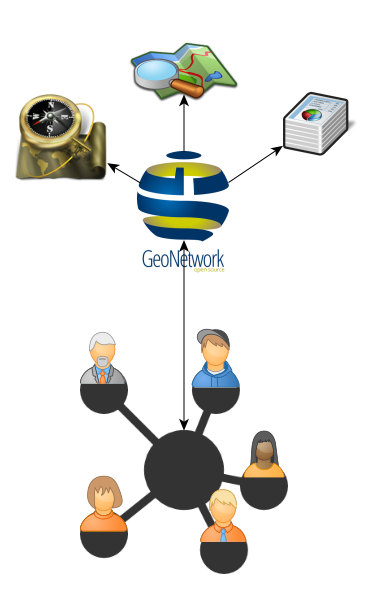

Social Features in GeoNetwork
María Arias de Reyna
SDI versus Social Network

GeoNetwork:
- Classic SDI
- "Readonly"
Social Network:
- Discuss and comment related data
- Upload own data
- Suggested data (extended user profiles)
- Data more reusable
Improve social features
- Allow to login with external openId
- Allow to link related data
- Allow to link related apps
- Allow to upload (meta)data
- Allow comments on metadata
Improve social features
- Extended user profile
- Offer suggested datasets
- Reward most active users
- Allow groups administrated by users
- Dashboards
- Notifications (private messages?)
What happens with current SDIs?
- Allow geoNetwork to work as classic SDI
- New extension (maven project) for all this social features
- Activated by settings?
- Backwards compatible
That's it
Questions, suggestions, comments, critics,...